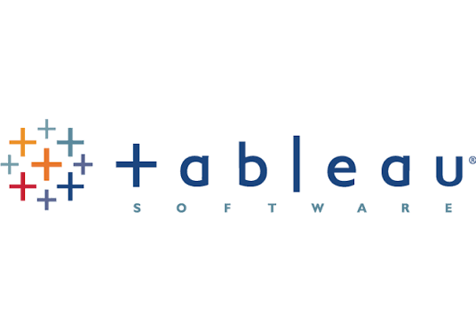

Skills: Microsoft SQL Server • SQL • SSMS • Window Functions • CTEs • SQL Views
Analyzed global COVID-19 datasets using SQL Server to generate actionable insights on case trends, mortality rates, and vaccination progress through data aggregation, joins, window functions, CTEs, and reusable SQL views.

Skills: Microsoft SQL Server • SQL • Dashboard Design • Data Visualization • KPI Reporting • Geographic Mapping
Created an interactive Tableau dashboard using SQL-derived COVID-19 data to monitor global cases, death rates, vaccination trends, and country-wise infection percentages through maps, KPI cards, bar charts, and trend lines.

Skills: Microsoft SQL Server • SQL • SSMS • Data Cleaning • Data Transformation • Window Functions • CTEs
Cleaned and transformed a real-world housing dataset using SQL Server by handling missing values, standardizing date formats, parsing property and owner addresses, removing duplicate records, and preparing an analysis-ready dataset through self joins, CTEs, window functions, and SQL transformation techniques.
{kind=link}
{kind=link}